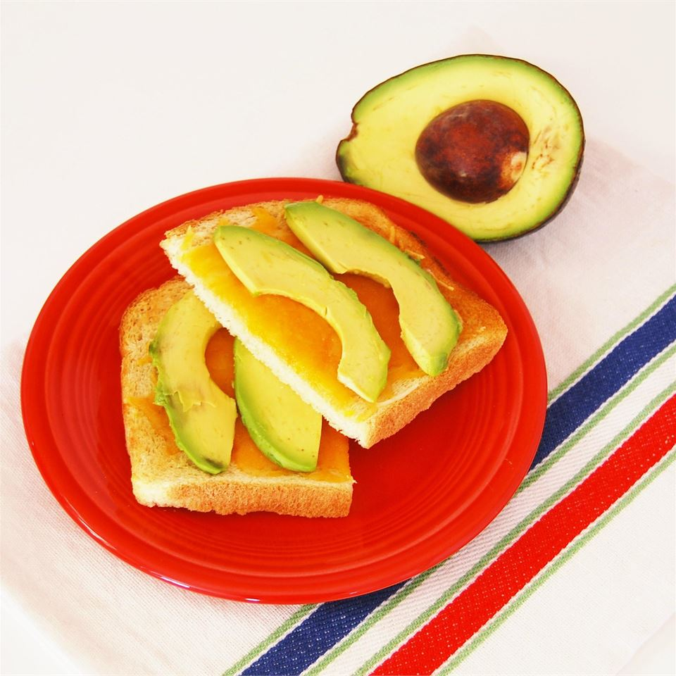

Avocado Toasts

Description
The perfect dish for breakfast. Healthy, full of nutrients and tasty
Ingredients
- 2 slices bread
- 2 ounces Cheddar cheese, cut into 8 pieces
- 1 avocado - peeled, pitted, and sliced
Steps
- Preheat oven to 300 degrees F (150 degrees C)
- Place bread on a baking sheet; top each piece with 4 pieces Cheddar cheese.
- Bake in the preheated oven until cheese melts, about 5 minutes. Cover each bread slice with sliced avocado.